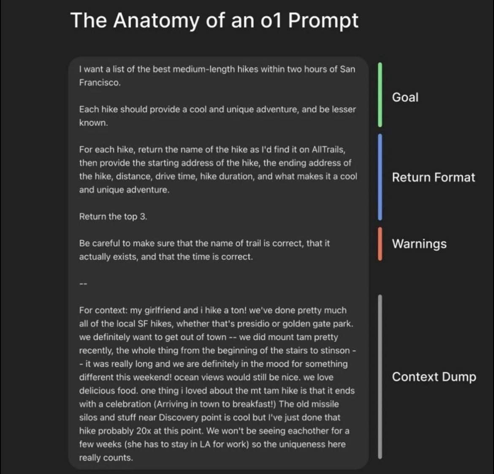

רוצים לדעת איך לכתוב פרומפט נכון? 🫠
פורסם במקור ב LinkedIn
רוצים לדעת איך לכתוב פרומפט נכון? 🫠
לאחרונה חברת Open AI פרסמה איך לכתוב פרומפטים בצורה נכונה למודלים ה"חושבים" כמו o1, גרוק 3, דיפסיק, וכו'
כתיבת פרומפט איכותי היא המפתח לתקשורת אפקטיבית עם מודלים של בינה מלאכותית. ככל שההנחיות שלכם יהיו ברורות וממוקדות יותר, כך התגובות שתקבלו יהיו מדויקות ורלוונטיות יותר.
בעוד שישנן שיטות שעובדות טוב עם המודלים ה"ותיקים" (אם אפשר לקרוא להם ככה) כמו Chain of thoughts או zero/few shots, מודל "חושב" דורש גישה אחרת, שמבוססת על התמקדות ישירה במטרה הסופית ומתן הנחיות ברורות ומובנות היטב.
במקום לפרק משימות לתהליכים ארוכים של נימוק שלב-אחר-שלב, כמו ב-Chain of Thought, המודל מעדיף פרומפטים מדויקים, קצרים ומובנים, שמכילים את כל המידע הרלוונטי מראש.
במילים אחרות, במקום "לחשוב בקול רם", כמו שעושים במודלים אחרים, כאן עדיף לתכנן מראש ולתת הנחיה חדה וממוקדת, תוך ציון המטרה, פורמט התשובה, אזהרות, והקשר רלוונטי.
גישה זו מאפשרת ל-O1 לייצר תשובות מדויקות, מהירות, וממוקדות יותר, תוך ניצול חכם של היכולות שלו לעבד מידע מורכב בצורה ישירה.
אז איך ניגשים לכתיבת פרומפט למודל O1? הנה המבנה המומלץ:
1. מטרה (Goal)
הגדירו בצורה מדויקת את מה שאתם מבקשים מהמנוע. לדוגמה: "אני מחפש רעיונות לפעילויות גיבוש צוות לחברה טכנולוגית."
2. פורמט התשובה (Return Format)
ציינו כיצד תרצו לקבל את המידע. לדוגמה:
"הצג כל רעיון בפורמט הבא:
שם הפעילות
תיאור קצר
משך הזמן
ציוד נדרש
מטרות הפעילות"
3. אזהרות (Warnings)
הדגישו נקודות חשובות שיש לשים לב אליהן. לדוגמה: "וודא שהפעילויות מתאימות לקבוצה של 20-25 אנשים ושאינן דורשות ציוד מיוחד שאינו זמין."
4. מידע נוסף (Context Dump)
שתפו פרטים נוספים שיכולים לסייע למודל להבין את ההקשר. לדוגמה: "הצוות מורכב מאנשים בגילאי 25-35, רובם עם רקע טכנולוגי. האירוע יתקיים במשרד עם חלל פתוח גדול."
דוגמה לפרומפט מלא:
מטרה (Goal)
אני מחפש רעיונות לפעילויות גיבוש צוות לחברה טכנולוגית.
פורמט התשובה (Return Format)
הצג כל רעיון בפורמט הבא:
שם הפעילות
תיאור קצר
משך הזמן
ציוד נדרש
מטרות הפעילות
אזהרות (Warnings)
וודא שהפעילויות מתאימות לקבוצה של 20-25 אנשים ושאינן דורשות ציוד מיוחד שאינו זמין.
מידע נוסף (Context Dump)
הצוות מורכב מאנשים בגילאי 25-35, רובם עם רקע טכנולוגי. האירוע יתקיים במשרד עם חלל פתוח גדול.
--
על ידי שימוש במבנה זה, תוכלו להבטיח שהמודל יבין את הצרכים שלכם ויספק תשובות מדויקות ומועילות.
מחקר עמוק (Deep Research) הופך להיות הסטנדרט החדש. אם בעבר הסתמכנו על חיפושים שטחיים ומנועי חיפוש מסורתיים, היום כלים חכמים מספקים תשובות מעובדות, מסוננות ומדויקות ישירות מתוך הררי מידע.
בין אם זה Perplexity, Google, ChatGPT, DeepSeek או Grok, כולם מבינים שהמשתמשים לא מחפשים רק "לינקים", אלא תובנות מסוננות וחכמות.
הגישה שלנו למידע משתנה מקצה לקצה - מהירות, הקשר עמוק ופחות רעש.
רק השבוע פרסמו שה- Co-Scientist, כלי מחקר חדש של גוגל, פתר תוך יומיים בעיה מחקרית שמנסים לפתור כבר עשור (אפרט על כך בפוסט נפרד).
גם מיקרוסופט שחררו השבוע מודל חדש שמצליח למפות ולנבא התנהגות של חלבונים. ההאצה בתהליכי המחקר היא אקספוננציאלית, ומי שיודע לנצל אותה מקבל יכולת ויתרון חסר תקדים.
יש לכם נושא מחקר בראש? זה הזמן לנסות!
תודה לAmitay Boneh על השיתוף שלו בנושא
https://lnkd.in/dZ9abiwk
ובהצלחה במחקר 🤖
